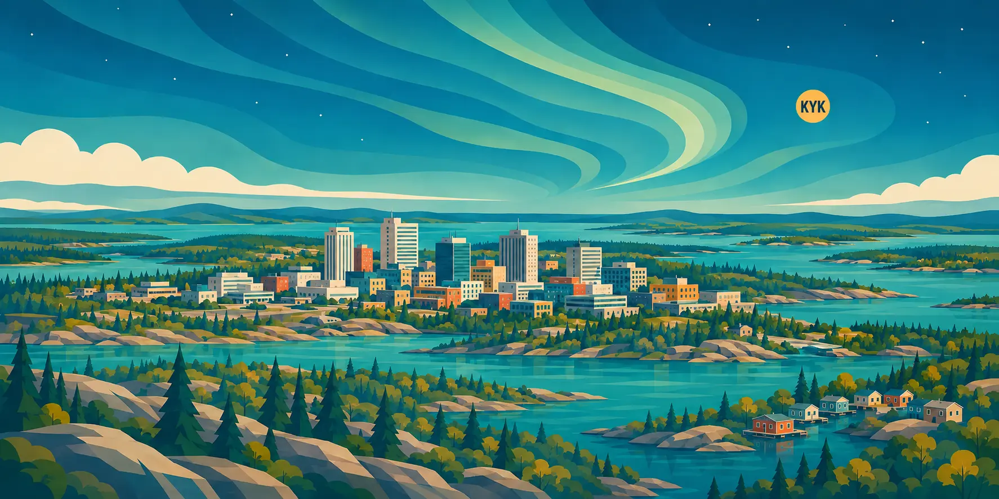

Learn
Read concise introductions grounded in Indigenous-led and official public sources.
Explore learning topicsA city worth knowing
Explore an independent, source-led introduction to the peoples, histories, languages and civic life of the Northwest Territories' capital.

Welcome
Whether you have roots here since time immemorial, arrived recently, have lived here for generations or are visiting, Know Yellowknife offers a respectful place to begin learning.
Read concise introductions grounded in Indigenous-led and official public sources.
Explore learning topicsAnswer ten questions, see explanations and return to improve your locally saved best score.
Try the quizFollow trusted links to community organizations and public learning resources.
Find trusted resourcesFeatured learning
Yellowknife is located in Chief Drygeese Territory. Learn from the organizations and public bodies whose work informs this independent educational prototype.
Ready to play?
Ten randomly selected questions. Helpful explanations. No account required.